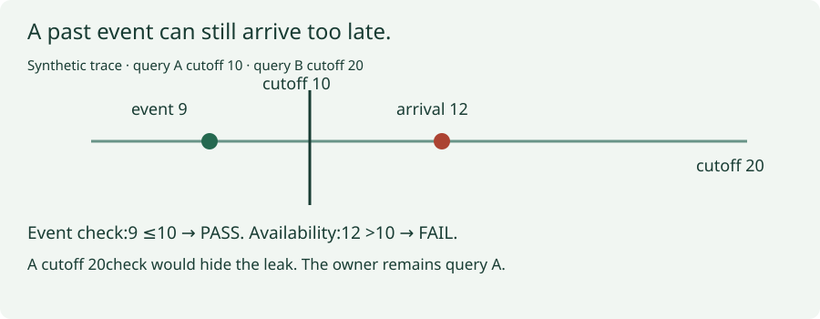
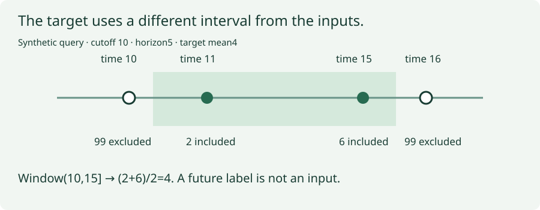
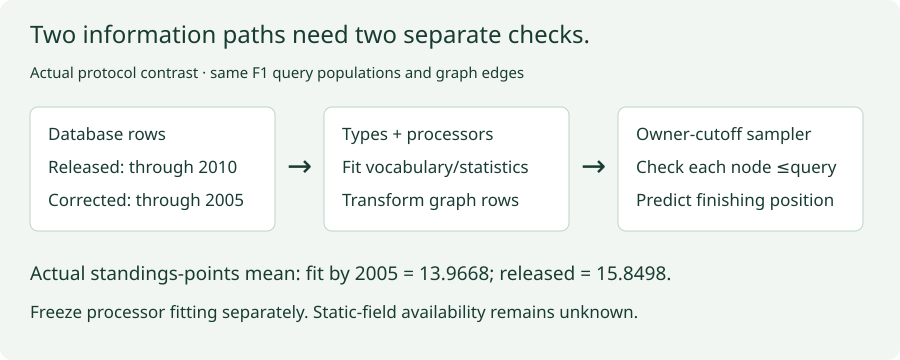
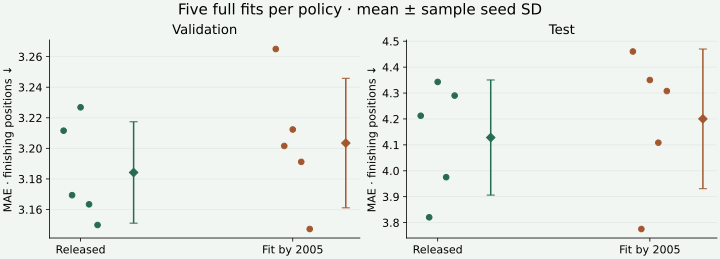

Year4 · Quarter4 · Lesson156
Temporal leakage audit: trace every information path
1 · Trace the information before trusting the score¶
Reading route. Separate event and availability time → rebuild labels → audit both input paths → measure the explicit correction → sign the scope.
Your win: produce an evidence-backed temporal audit that can say PASS, FAIL, or not established, and explain the difference. The core reading takes about 30 minutes; the executable audit and full reproduction are a separate lab session.
Lesson 155 compared manual features with relational learning on the same F1 queries. It verified scores but left three temporal questions: the SQL uses strict-past history, graph sampling includes equal timestamps, and neither pipeline has complete feature-arrival histories. We now follow information through the entire pipeline. This serves our mission: a predictive advantage matters only if the required information could have been used when the prediction was made.
Recall the objects. A relational entity graph, or REG, represents table rows as nodes and foreign-key links as edges. A query identifies an entity and a prediction cutoff. A driver can have many queries, so the full identity is (driver_id, cutoff). A label is the future outcome used for training or evaluation. A feature is an input available to the predictor. The same raw result can be a label for an earlier query and a legal historical feature for a later query.
The primary reading is RelBench, Section 2: Data Splits, followed by its released graph construction. Read the actual input population passed to the feature processor. A temporal sampler does not control every information path.
2 · There are two clocks, and the query owns the cutoff¶
In plain terms. “It happened yesterday” and “we learned about it yesterday” are different claims.
Event time records when an event occurred. Availability time records when the prediction system could first use a value or version. A late-arriving result can have event time 9 and availability time 12. For a query at time 10, that result is too late despite its old event timestamp.
Worked example, synthetic. Query A has cutoff 10 and query B has cutoff 20. A sampled result at time 12 belongs to A. Comparing it with the batch maximum, 20, falsely accepts it. The correct comparison uses A's cutoff, 10, at every graph hop. Reaching the result through another entity does not grant a new cutoff.
A strict-past event rule requires event < cutoff; an inclusive rule requires event <= cutoff. Both additionally require availability <= cutoff for a historical availability claim. Equality is a policy question: a timestamp representing the start of a day does not prove that the day's result was already known. Preserve the source boundary and disclose its resolution. Do not silently change every <= into < and call that reproduction.
A schedule is different. A race dated 12 can be a legal input at cutoff 10 if its schedule was published at 9. Applying event <= cutoff to schedules would wrongly reject known future plans. Conversely, seeing a schedule in today's archive does not prove it was published before the old query. A field with no timestamp is timeless in the schema, not automatically available forever.
On narrow screens, scroll each diagram horizontally; the surrounding worked example provides the same values in text.


Predict whether the row should pass before changing its event time, arrival time, or boundary:
Lab task 1 — audit_observations. Evaluate each dependency under its own cutoff and declared kind. A known violation gives FAIL even when another timestamp is missing. If the known conditions pass but availability is missing, return NOT_ESTABLISHED. An empty input is not evidence. The actual SQL lineage replay and fresh training audit call this function.
3 · Labels belong after the cutoff; inputs do not inherit that permission¶
The F1 task asks for a driver's mean finishing position over the next 60 days. Its label window is (cutoff, cutoff + 60 days]: exclude the left boundary and include the right. An entity without a future participation label is absent from this benchmark's query population. This is a benchmark conditioned on future participation, not an unrestricted deployment population of every driver.
Worked example, synthetic. At cutoff 10 with horizon 5, result values are 99 at time 10, 2 at time 11, 6 at time 15, and 99 at time 16. Only 2 and 6 contribute: label (2 + 6) / 2 = 4. Using either boundary incorrectly changes the answer. Changing prediction order must not change the score; matching only driver ID can.
Label maturity asks whether a training label's observation window ended before the model's training completion time. We verify the latest training window ends by the 2005 validation boundary, and the latest validation window ends by the 2010 test boundary. Validation outcomes may select the checkpoint; test outcomes may score the frozen selection. Reusing a previously exposed test split is a reproduction, not untouched confirmation.
Lab task 2 — audit_label_windows. Rebuild every supplied mean from raw events using complete query keys. Reject duplicate queries and nonfinite values; return a failed audit for a mismatched or empty label window. The full audit separately reconstructs each cutoff's eligible entity set so checking only the supplied rows cannot hide missing queries.


4 · Follow both paths into the prediction¶
In plain terms. Blocking a future neighbor does not stop a future row from influencing the encoder's fitted statistics.
A feature processor converts raw columns into numerical tensors. It can learn numerical means, time ranges and categorical vocabularies. Type inference decides which kind of processor a column receives. Both have a fitting population. Transforming later rows with an already fitted processor is different from fitting again on them.
The released GNN constructs features from database rows through 2010-01-01, the test cutoff. Its neighbor loader then filters dated rows for each query. This follows the pinned implementation. It is not proof that the processors could have been fitted when training ended in 2005.
Our declared fit-horizon policy requires dated-table type discovery and feature-processor fitting to use rows dated no later than 2005-01-01. The audit finds that the released preprocessing violates this policy. This is a separate verdict from source parity. It does not show that future labels were directly fed into the neural network, and it does not establish the size or direction of any score effect.


The correction fits dated-table processors using the permitted population and uses their fixed conversion on every graph row. It preserves graph identities and event timestamps. The training recipe, query populations, validation selection and evaluation rule remain fixed. Vocabulary or inferred-type changes can alter encoder dimensions; this intervention concerns the complete preprocessing policy, not only one scalar mean.
A crucial distinction: these are frozen processors fitted when model training ends. They may use matured training history later than an early training query. We do not pretend this is a separate model retrained at every historical query cutoff. If that is the deployment question, it needs its own rolling-origin experiment.
The FE pipeline already fits its tabular processor on training feature rows. Its SQL still needs an audit of the inputs used to create those rows. We regenerate every feature and independently reconstruct all 50 engineered fields. Result and standings history passes the source event-date conditions. Upcoming race fields have future event dates, but their publication histories are missing. Static driver and constructor attributes have no version history. The SQL percentage-of-laps denominator also depends on eligible joined query rows within each split. Exact source reconstruction does not establish a feature independent of that benchmark cohort. Neither arm earns a historical availability guarantee.
Scope check. The corrected GNN still retains static-table rows without proven creation/arrival times. Its dated-table cutoff is an event-time proxy. Correcting that demonstrated fit-scope violation cannot recover missing ingestion histories, historical versions, or a different deployment cohort.
5 · Reproduce first, correct explicitly, then measure¶
Named experiment: L156 rel-f1/driver-position — temporal audit of released RDL and manual-FE pipelines.
The released lane runs all 7,453 training, 499 validation and 760 test queries. Five seeds each train ten full epochs. The model uses typed row encoders, relative time, two 128-channel sum-GraphSAGE layers and a scalar head. It uses Adam at 0.005, batches of 512, L1 loss and uniform 128/64 neighbor fanouts. The first strict validation-MAE minimum selects the checkpoint. Predictions are clipped to the training-target 2nd/98th percentiles, as in the released evaluator. MAE is mean absolute prediction error, measured in finishing-position units; lower is better.
The corrected lane repeats all five complete fits with the frozen preprocessing policy from Section 4. The policy was written before inspecting corrected scores. It is a course intervention, separate from the paper-table reproduction. We do not select whichever temporal policy happens to score better on test.
During every yielded batch: compare roots with the source task table, verify original node and edge identities, reject cross-query edges, and check each dated node against its owner's cutoff. The new function checks timestamp maxima separately for each owner and table; the existing identity checker still examines every sampled node and edge. Passing the sampled census covers those draws, not every possible stochastic neighborhood. On each split's first batch, forged root cutoffs and node times must be rejected.
| Lane | Validation MAE | Test MAE | Strict fit/availability verdict |
|---|---|---|---|
| Released source | 3.1842 ± 0.0332 | 4.1283 ± 0.2222 | FAIL |
| Fit by 2005 correction | 3.2035 ± 0.0424 | 4.2004 ± 0.2696 | NOT_ESTABLISHED |


Measured consequence: corrected minus released test MAE is +0.0721 finishing positions. Positive means the corrected lane is worse. The temporal policy is justified by its information contract, not by a preferred score. The released mean's frozen ±0.20 comparison with Table 7 is CLOSE; the corrected lane is not that published experiment.
Points are individual seeds; bars show mean ± sample seed standard deviation. Seed variation describes these fits on one database. Matching integer seeds across policies does not make identical initial weights when preprocessing changes dimensions. The difference is descriptive; no population-level superiority or equivalence claim follows.
Measured coverage: all 8,712 labels, 443,552 independently reconstructed SQL values, and 12,590 held-out predictions across ten primary fits. Each lane audits 403,895 yielded query occurrences. The released lane checks 56,097,400 dated-node occurrences and 130,667,821 edge occurrences; these are repeated sampled occurrences, not unique database rows. Equality-boundary occurrences: 51,049. Nonfinite first-backward entries per released seed: [640, 640, 640, 640, 640]. Machine-readable coverage.
Delivery evidence: the standalone 30-code-cell audit notebook passed in an empty directory. Its full pinned GPU gate ran ten additional complete fits and independently checked another 12,590 predictions, excluded from the primary means. A controlled future-row perturbation left corrected fit statistics unchanged and changed the released control. Reserved worker resources plus the overhead allowance total $7.47**, within the **$10 aggregate cap; this is not an invoice. Budget ledger. Live Colab and deployment remain NOT_CHECKED.
The first backward pass also records nonfinite gradient entries inherited from the source numeric encoder. They are an optimization-health limitation, separate from temporal leakage. We preserve them rather than silently repairing another mechanism inside this experiment.
6 · Sign the scope, not a universal promise¶
A reusable checklist needs claim, policy, coverage, evidence and verdict for each item. A source hash ties a report to bytes; it is not a signature from an independent reviewer. A completed audit can honestly conclude that legality is not established.
| Check | Evidence required | What a pass does not prove |
|---|---|---|
| Query identity | Complete (entity, cutoff) key set and root/task agreement |
Arrival history |
| Label window/cohort | Rebuilt values, eligible entities, boundary and maturity checks | Deployment population equivalence |
| Sampled graph | Original identities, owner cutoffs, no cross-query edges | Every possible draw or mutable attributes |
| SQL features | Value reconstruction and joined-row time conditions | Publication of scheduled events |
| Processor fitting | Type/vocabulary/statistic fitting population and frozen conversion | Static fields existed historically |
| Availability | Ingestion/publication/version history or explicit missing evidence | Event dates alone are insufficient |
| Model selection | Complete validation trace and first-best rule | Pristine test data after prior exposure |
| Scores | Finite predictions aligned to complete keys | Information legality or superiority |
Lab task 3 — audit_verdict. Require all declared checks. Known failures dominate; missing checks prevent sign-off; unobserved histories remain NOT_ESTABLISHED. A PASS needs every required check and evidence. The final report calls your function for both real experiment lanes.
Portfolio coverage: F1 receives the new full census and fresh instrumented fits. The classification entry has existing completed fits, but a fresh L156 execution of its new auditor is NOT_RUN. Recommendation retains its earlier 32-batch validation pilot: full reproduction INCOMPLETE, test NOT_RUN. Reviewing their pinned contracts does not close those gaps. Coverage record.
Fixing a leak means tracing its cause. A mutated batch-maximum checker is repaired by indexing the original owner cutoff. A future fitted statistic is repaired by fitting on the declared historical population and transforming later inputs without refitting. A missing schedule history requires better evidence or an explicitly different feature policy; replacing missing timestamps with event dates manufactures certainty. Score improvements are never the acceptance criterion for a temporal repair.
7 · Exit: defend the boundary you actually checked¶
Student notebook · Worked notebook · Teacher solution · Reference checklist · Measured report · Reproduction contract.
Complete the three live functions, export your audit, and write 250–400 words. Name one demonstrated policy violation, explain its correction and measured consequence, and defend why historical availability is still unknown. Distinguish source parity, sampled event-time legality, fit-time policy and original availability. Include the coverage boundary of the other portfolio tasks.
The teaching agent grades policy clarity, owner/query reasoning, evidence coverage, correction interpretation and honest conclusion, 0–2 each. Readiness needs 8/10 with no zero. Author execution leaves PENDING_WRITTEN_DEFENSE. Tomorrow reconstruct the two-clock counterexample without notes. In a week, audit a schedule published before its future event and a late-arriving past result.
Ask the agent follow-up questions about any boundary or missing history. Lesson 157 packages reproducible work for others; this audit determines which claims that package may carry.